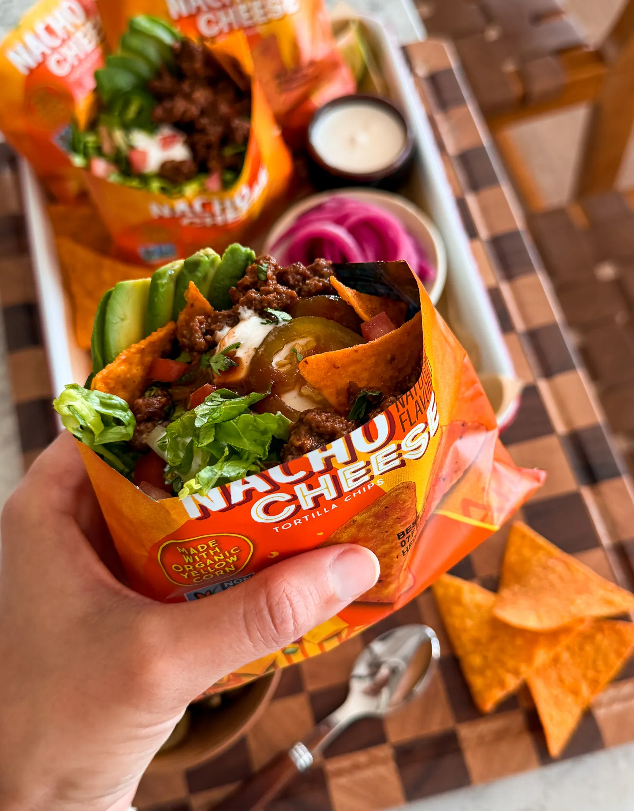

The Starving Artist Cookbook
WALKING TACOS
Total time: 45 min
Makes: 6 aprox
RATING:

Walking tacos are one of those meals that are just fun to eat.
Saucy, well-seasoned ground beef gets spooned straight
into a bag of chips and piled high with fresh toppings.
No plates, no rules, just an easy dinner everyone loves.
INGREDIENTS
- 1 pound ground beef (90/10)
- 1 tablespoon olive oil
- 1/2 teaspoon onion powder
- 1/2 teaspoon black pepper
- 3/4 teaspoon salt, or to taste
- 1 teaspoon coriander
- 1 teaspoon smoked paprika
- 1 teaspoon cumin
- 1 teaspoon garlic powder
- 1 teaspoon oregano
- 2 teaspoons chili powder
- 1/2 tablespoon cornstarch
- 1/4 cup tomato sauce
- 1/2 to 3/4 cup beef broth
FOR ASSEMBLY
- 6 small bags of chips, flavor of choice
- Shredded lettuce
- Diced tomatoes
- Pickled jalapeños
- Red onion or green onion, finely chopped
- Cilantro, finely chopped
- Sour cream
- Hot sauce
- Avocado or guacamole
INSTRUCTIONS
THE GROUND BEEF
-
Heat a large skillet over medium heat and add the olive oil.
Once hot, add the ground beef and use a wooden spoon or
spatula to break it up into small crumbles as it cooks.
-
Cook the beef until no longer pink and lightly browned,
continuing to break it up so the pieces stay small and even.
-
Sprinkle in the onion powder, black pepper,
salt, coriander, smoked paprika,
cumin, garlic powder, oregano, chili powder, and cornstarch.
Stir well so the spices evenly coat the beef.
-
Add the tomato sauce and beef broth, stirring to combine.
Let the mixture simmer for a few minutes,
stirring occasionally,
until the beef is juicy, saucy, and slightly thickened.
Assembly
-
Carefully open each small bag of chips, leaving the chips whole.
-
Spoon the warm ground beef directly into each bag.
-
Top with shredded lettuce, diced tomatoes, pickled jalapeños,
chopped red or green onion, cilantro, sour cream, hot sauce,
and avocado or guacamole. Feel free to pick whatever toppings
you like and enjoy immediately!
CHOCOLATE MOUSSE CUPS
Total time: 45 min
Makes: 7 aprox
RATING:

If you want something that tastes like straight chocolate bliss,
these mousse cups are it. Theyre creamy, velvety, and so satisfying
without ever feeling heavy. I love how effortless they are while
still feeling like a restaurant-level dessert.
INGREDIENTS
-
Crushed cookies and melted butter come together
to make the quickest, tastiest base.
It adds just the right amount of crunch
to balance the silky mousse.
-
Heavy cream, butter, sugar, chopped chocolate,
egg yolks, espresso powder, vanilla, and a pinch of salt
plus chilled heavy cream for whipping.
It creates that airy, silky texture that melts in your mouth
Another option which is the French technique is to use
whipped egg whites for aerating the pudding if
you prefer a lighter version.
-
Fresh heavy cream whipped with powdered sugar and vanilla
extract until soft and fluffy. Its the final touch
that makes each spoonful extra dreamy.
It also helps to cut from the chocolate. If you want
to make this recipe even easier and quicker,use store bought
whipped cream for the topping or skip it
entirely for pure chocolate bliss.
How to make it
Make the crust
Pulse your oreo cookies in a food processor until they
turn into very fine crumbs the texture should look like sand.
Transfer to a bowl and mix with melted butter until
fully combined and resembling wet sand. Cover and set
aside until assembly.
Make the chocolate mousse
Place the chopped chocolate in a heat-safe bowl.
In a small saucepan over medium-low heat,
warm the heavy cream with the butter and sugar until hot
and the sugar dissolves.
Pour this mixture over the chocolate, cover the bowl,
and let it sit untouched for about 10 minutes.
Once melted through, whisk until smooth and glossy,
then let it cool slightly. Whisk in the egg yolks,
then add the espresso powder, vanilla extract,
and a tiny pinch of salt. In a separate bowl,
whip the chilled heavy cream to soft peaks and gently
fold it into the chocolate mixture until the mousse
becomes airy and light. Cover, pop in the fridge, and set aside.
Make the chantilly cream
Whip heavy cream, powdered sugar, and vanilla until soft,
pillowy peaks form. Cover and set aside.
You can spoon it on or pipe it for a bakery-style finish.
CHICKEN ALFREDO LASAGNA SOUP
Total time: 30 min
Makes: 4 aprox
RATING:

Imagine your favorite chicken Alfredo pasta
but transformed into a creamy, dreamy
soup youll want to curl up with. Its rich, cheesy,
and full of those cozy vibes we all crave once the
weather cools down. The best part? It comes together
in one pot with simple, everyday ingredients.
INGREDIENTS
-
Were using boneless, s
kinless chicken breasts they cook quickly
and stay juicy once chopped.
Toss them in olive oil, Italian seasoning,
lemon pepper, smoked paprika, garlic powder,
salt, and black pepper for flavor that seeps
into every bite.
-
This is where the magic happens that rich, silky texture
that makes every bite so cozy. Youll melt butter and sauté
garlic until fragrant, then pour in your chicken broth.
Then for creaminess, you can use half and half, heavy cream,
or milk its totally up to you.
-
Instead of boiling them separately, break up lasagna
sheets into smaller pieces (they dont need to be perfect!)
and let them cook right in the soup. Theyll soak up all
that creamy flavor and turn perfectly silky
in about 12 to 14 minutes.
-
A mix of parmesan and mozzarella gives that signature
Alfredo creaminess, while fresh basil and parsley brighten
everything up. I always say dont skip the fresh herbs
they balance the richness perfectly.
HOW TO MAKE IT
-
Whisk together olive oil and your seasonings,
then toss the chicken until evenly coated.
Sear in a large pot until golden brown on both
sides and cooked through, about 5 to 6 minutes per side.
Let it cool slightly before chopping into bite-sized chunks.
-
In the same pot, melt butter and sauté minced garlic for
about a minute until it smells incredible.
Pour in your broth and choice of milk, half and half,
or cream. Add Italian herbs, oregano, salt, black pepper,
nutmeg, dried mustard, and cayenne. Let everything come
to a gentle simmer over low-medium heat so the flavors infuse.
-
Drop in the broken lasagna sheets and stir occasionally
so they dont stick together. Let them cook for about 12
to 14 minutes until tender and silky.
-
Add the cooked (or rotisserie) chicken back to the pot along
with parmesan, mozzarella, parsley, and basil.
Stir until the cheeses melt and the soup
turns creamy and velvety.
Taste and adjust salt or pepper as needed.
-
If you like it extra creamy, ladle out about
1 cup of the soup into a bowl, whisk in a spoonful of flour,
and stir it back in until slightly thickened.